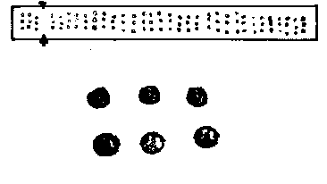

MUTANT SCREENING PROTOCOL USING TISSUE PRINTS
Nicola Stacey, Paul Knox & Keith Roberts
(Department of Cell Biology, John Innes Institute, Colney Lane,
Norwich, NR4 7UH, U.K.)
* There has been a lot of interest recently in the revived use of "tissue
printing" as a way of rapidly locating specific molecules in particular cells
or tissues within the plant. By cleanly cutting the material in question
and pressing it firmly onto a membrane, commonly nitrocellulose, a print
of the cut face is obtained. This is formed by soluble molecules released
at the surface that bind irreversibly to the membrane. The print, which is
remarkably faithful to the original anatomy, can then be probed with a
variety of localising reagents or probes. These have included antibodies
to localise cell-wall glycoproteins (Cassab & Varner 1987. J. Cell. Biol.
105, 2581-2588) and nucleic acid probes to look at the expression of
mRNAs encoding cell-wall proteins (Ye & Varner 1991. The Plant Cell 3,
23-27).
* We have adapted this simple technique to begin to screen for cell
surface mutants in Arabidopsis, but we feel that the method has much
wider potential as a general screening strategy. We have a panel of
monoclonal antibodies that recognise a variety of cell surface
macromolecules including pectins, plasma membrane-associated
arabinogalactan proteins, and extensin-like proteins. By probing tissue
prints of flowering stems with these antibodies, we can rapidly screen
under a simple binocular microscope for two classes of mutant: one in
which the corresponding antigen, e.g., extensin, is either over- or
under-expressed and the other in which the antigen is expressed, but is
in an inappropriate place. This kind of subtlety in screening is probably
rather difficult to do in any other way. In theory, a wide range of plant
parts can be used for printing including stems, leaves and seeds.
Caution must be exercised in that any variant plant selected must be
further screened using conventional tissue sections. This is because a
reduced abundance of antigen, extensin for example, on a tissue print
may reflect either a genuinely lower level in the tissue, or a normal level,
but with increased insolubilisation in the cell wall, thus reducing the
soluble pool available for tissue printing. We have been screening for
mutants that have altered expression of pectin, AGPs and extensin-like
proteins. The variants we have found so far are clearly distinguishable
from the wild type (see Figure). One person could reasonably tissue
print about 160 plants per hour, but in fact, boredom would probably limit
you to fully printing and screening more than 300 or so plants a day with
any one probe. The protocol we have settled on is given below.
1. SELECTION OF CELL WALL MUTANTS USING TISSUE PRINT
TECHNIQUE
(i) Sow M2 Arabidopsis seed (we are using EMS mutagenised material),
1 seed per well, in 60-well seed trays. Water compost before sowing.
Suspend seed in water and transfer individually by pipette. Cover seed-
tray with domed plastic cover. Do not water again until after germination.
(ii) Grow plants in a controlled environment room at 22oC, 16 h
daylength, 50% relative humidity.
(iii) After 6 weeks, use floral stems for tissue printing.
(iv) Prepare nitrocellulose sheet (S & S brand) by soaking in 0.2 M
CaCl2 and blotting dry (1 cm wide strip for each antibody to be tested).
(v) Cut floral stem from plant between 1st and 2nd node. Press firmly
onto the nitrocellulose for 2 sec, 3 times per nitrocellulose strip. If
making multiple strip for probing with different antibodies, cut fresh face
before moving on to the next strip.
(vi) Block all protein-binding sites on the nitrocellulose by incubating
with 10% sheep serum in phosphate buffered saline for 1 h. Add 0.1%
sodium azide to inhibit endogenous peroxidases. Carry out all
incubations at r.t. with agitation.
(vii) Replace blocking buffer with a 20-fold dilution of rat hybridoma
culture supernatant containing antibodies in PBS with 10% sheep
serum and 0.1% sodium azide. Incubate for 2 h.
(viii) Wash in PBS, 3 times 10 min.
(ix) Incubate for 1 h with a 2000-fold dilution of anti-rat IgG linked to
horseradish peroxide in PBS with 10% sheep serum (no azide).
(x) Wash in PBS, 3 times 10 min.
(xi) Add peroxide substrate to give blue colour at binding site. Make
substrate up immediately before use. 25 ml H2O + 5 ml methanol
containing 3 ugml-1 4-chloro-1- napthol + 30 ul 6% hydrogen peroxide.
The colour should develop within 5 min.
(xii) Wash extensively with H2O.
(xiii) Dry and examine under binocular microscope.
* The first print will usually contain a lot of chlorophyll but the second (or
third print for abundant antigens) will clearly reveal any differences in
amount or position of antigen.
2. OTHER APPLICATIONS
* The method transfers soluble molecules of all sorts to the membrane,
and different membranes e.g., nitrocellulose, charged or non-charged
nylon, can be used to immobilise most of them. Thus, in principle, one
could screen for variation not only in soluble proteins/glycoproteins, but
also in soluble polysaccharides, glycolipids, nucleic acids and enzyme
activities. Reagents with which to probe the tissue prints might include
not only polyclonal antisera or monoclonal antibodies and nucleic acid
probes, but also enzyme substrates, labelled ligands of various sorts
and labelled lectins.
FIGURE 1
Tissue prints of 33 EMS mutagenised Arabidopsis floral stems. Each
stem is printed 3 times. The whole sheet has been probed with JIM19, a
monoclonal antibody to an extensin-like protein (kindly provided by Neil
Donovan). A plant that shows much reduced expression is arrowed.

FIGURE 2
Enlarged tissue prints from two plants that have been probed with JIM
19.